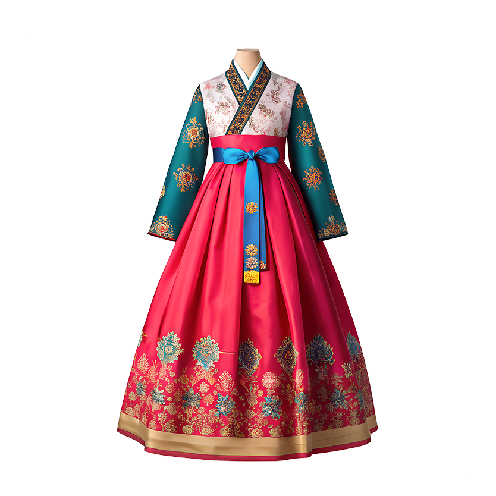

Korean dramas have transcended screens and sparked global curiosity about Korean food, music, language, and travel. This story explores the patterns behind that cultural ripple effect.
Since the late 1990s, Korean dramas have been quietly reshaping global pop culture. What began as regional popularity in East Asia gained worldwide attention in the mid 2000s and hasn't slowed down since. Titles like Squid Game, Crash Landing on You, My Love from the Star, and KPop Demon Hunters are more than just entertainment. They serve as entry points into a culture that millions of people around the world are eager to explore.
The Hallyu (한류), the Korean Wave, is the broader movement: the global spread of Korean culture through music, film, food, fashion, and language. K-Dramas sit at its heart, the emotional hook that turns casual viewers into people who start learning the language, booking flights to Seoul, and cooking the food they saw on screen.
Sources
¹ Korean Cultural Centre UK (KCCUK). "Hallyu (Korean Wave)." kccuk.org.uk
² Variety. "'KPop Demon Hunters' Hits 20 Weeks on Netflix Top 10." variety.com, Nov. 4, 2025.
Exploring viewing patterns, genre preferences, and cultural impact through data from MyDramaList, Duolingo, and Google Trends, cross checked with Nielsen Korea, Netflix viewership, and IMDb to identify the most globally significant K dramas.
Every drama watched plants a seed of curiosity. Viewers do not stop at the credits. They search for Korean recipes, stream K-Pop playlists, study Hangul, and book flights to Seoul.

The data shows that K-dramas are not just a passing trend but a growing global force that turns viewers into active participants in Korean culture. Their emotional themes such as love, sacrifice, family, and ambition are relatable across cultures, which helps explain the continued rise of Hallyu. As streaming platforms break down geographic barriers and audiences look for more authentic storytelling, Korean dramas prove that strong narratives can go beyond language and culture. Overall, their global influence keeps expanding and shows no signs of slowing down.